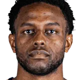
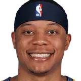

His best final NBA finish was #7 of 30, with the 2017-18 New Orleans Pelicans. In his 183 games for 3 teams over 5 seasons they went 85–98 (46.4%), −13 games under .500, with an average final finish of 19.2. The biggest one-season rise in his career: the New Orleans Pelicans went from #21 in 2016-17 to #7 in 2017-18.
Jump to: Record by opponent · Season by season · Teammate help
Compare Cheick Diallo with…
Final NBA finish, season by season
Title Finals Other playoffs Missed playoffs. #1 = champion; the dashed line is last place that season. Each point opens that season's final standings.
All 30 teams ranked in 2017-18, his best finish (#7)Teammate help
 Anthony Davis13.03 seasons
Anthony Davis13.03 seasons DeMarcus Cousins2.02 seasons
DeMarcus Cousins2.02 seasons Jrue Holiday1.52 seasons
Jrue Holiday1.52 seasons
Career
Career records (W–L, W − L, with and without) include 2026-27 games through Nov. 22, 2026; season counts and finishes are through 2025-26. Each card opens its board in the same scope. How we count.

Latest completed seasons
Season by season
Newest first; every header sorts. Final NBA finish is the team's rank among all teams that season (#1 = champion) and opens that season's standings. "Without him" uses the team-season window; the span line counts only the games between his first and last game for the team.
| 2021-22 | #28 of 30 | 23–59 28.0% | Missed playoffs | 3 of 82 | 0–3 0.0% | 23–56 29.1%span: N/A, gap N/A | −29.1 | |
| 2019-20 | #18 of 30 | 34–39 46.6% | Missed playoffs | 47 of 73 | 20–27 42.6% | 14–12 53.8%span: 14–12, gap −11.3 | −11.3 | |
| 2018-19 | #22 of 30 | 33–49 40.2% | Missed playoffs | 64 of 82 | 27–37 42.2% | 6–12 33.3%span: 6–12, gap +8.9 | +8.9 | |
| 2017-18 | #7 of 30 | 48–34 58.5% | Lost conf semis 1–4 | 52 of 82 | 29–23 55.8% | 19–11 63.3%span: 19–11, gap −7.6 | −7.6 | |
| 2016-17 | #21 of 30 | 34–48 41.5% | Missed playoffs | 17 of 82 | 9–8 52.9% | 25–40 38.5%span: 25–38, gap +13.3 | +14.5 |
On/off, starts and close games
From the lineup data, 1996-97 on. On/off is net points per 100 possessions with him on the floor minus off, a different unit from the win-rate gaps. Started and off the bench are team records in those games; close games are those within 5 points in the last 5 minutes with him on the floor.
| 2021-22 | −40.5 | N/A | 0–3 0.0% | N/A | |
| 2019-20 | −4.9 | 1–1 50.0% | 19–26 42.2% | N/A | |
| 2018-19 | −4.9 | 0–1 0.0% | 27–36 42.9% | 4–9 30.8% | |
| 2017-18 | −10.6 | N/A | 29–23 55.8% | 1–0 100.0% | |
| 2016-17 | −12.6 | N/A | 9–8 52.9% | 1–0 100.0% |
Teammate help by season
Two separate numbers per season, each with every teammate that adds to it. Help this season = Teammates Score points for honors won that season by teammates who shared a game with him. Help coming in = the same teammates' honors from the season before. How help works.
- 2021-22
 DetroitHelp this season: 0, no honored teammate
DetroitHelp this season: 0, no honored teammateMore: help coming in
Help coming in (teammates' honors the season before): 0.25 = 0.25 Saddiq Bey
- 2019-20
 Phoenix
Phoenix
 Devin Booker All-Star146 g
Devin Booker All-Star146 g
Help this season: 1 = 1 Devin Booker
More: help coming in and other teammates
Help coming in (teammates' honors the season before): 0.25 = 0.25 Deandre Ayton
Other teammates (no honors that season): Mikal Bridges 47 g, Elie Okobo 41 g, Dario Saric 40 g, Ricky Rubio 40 g, Jevon Carter 39 g, Kelly Oubre 38 g, Cameron Johnson 32 g, Ty Jerome 26 g, Aron Baynes 24 g, Deandre Ayton 23 g, Frank Kaminsky 23 g, Tyler Johnson 20 g, Jalen Lecque 5 g, Tariq Owens 3 g and 3 more
- 2018-19
 New Orleans
Anthony Davis All-Star139 gJrue Holiday All-Def 2nd0.549 g
New Orleans
Anthony Davis All-Star139 gJrue Holiday All-Def 2nd0.549 g
Help this season: 1.5 = 1 Anthony Davis + 0.5 Jrue Holiday
More: help coming in and other teammates
Help coming in (teammates' honors the season before): 7 = 6 Anthony Davis + 1 Jrue Holiday
Other teammates (no honors that season): Julius Randle 55 g, Darius Miller 53 g, Ian Clark 51 g, Jahlil Okafor 48 g, Frank Jackson 46 g, Kenrich Williams 43 g, Tim Frazier 36 g, E'Twaun Moore 36 g, Solomon Hill 34 g, Elfrid Payton 32 g, Nikola Mirotic 20 g, Wesley Johnson 20 g, Stanley Johnson 18 g, Dairis Bertans 12 g and 3 more
- 2017-18New Orleans
Anthony Davis All-NBA 1stAll-StarAll-Def 1st648 gJrue Holiday All-Def 1st151 gDeMarcus Cousins All-Star122 g
Help this season: 8 = 6 Anthony Davis + 1 Jrue Holiday + 1 DeMarcus Cousins
More: help coming in and other teammates
Help coming in (teammates' honors the season before): 7.5 = 6 Anthony Davis + 1 DeMarcus Cousins + 0.5 Tony Allen
Other teammates (no honors that season): Darius Miller 52 g, E'Twaun Moore 52 g, Ian Clark 49 g, Rajon Rondo 42 g, Nikola Mirotic 27 g, Dante Cunningham 25 g, Emeka Okafor 23 g, Jameer Nelson 22 g, DeAndre Liggins 21 g, Solomon Hill 12 g, Charles Cooke 12 g, Tony Allen 11 g, Larry Drew II 7 g, Omer Asik 6 g and 5 more
- 2016-17New Orleans
Anthony Davis All-NBA 1stAll-StarAll-Def 2ndAll-Star MVP612 gDeMarcus Cousins All-Star12 g
 Buddy Hield All-Rookie 1st0.259 g
Buddy Hield All-Rookie 1st0.259 g
Help this season: 7.25 = 6 Anthony Davis + 1 DeMarcus Cousins + 0.25 Buddy Hield
More: help coming in and other teammates
Help coming in (teammates' honors the season before): 5 = 4 DeMarcus Cousins + 1 Anthony Davis
Other teammates (no honors that season): Tim Frazier 15 g, Solomon Hill 15 g, Jrue Holiday 15 g, E'Twaun Moore 14 g, Dante Cunningham 13 g, Donatas Motiejunas 11 g, Alexis Ajinca 11 g, Langston Galloway 9 g, Terrence Jones 9 g, Jordan Crawford 7 g, Quinn Cook 7 g, Reggie Williams 4 g, Tyreke Evans 4 g, Omer Asik 4 g and 5 more
Record against each opponent
Regular season, through 2025-26 (2026-27 games not included): 183 games, 85–98, against 30 franchises.
Grouped by franchise (named as today); game lists keep each team's name that season. Filters and the tab are kept in the URL, so a filtered view can be shared.
| Games list | |||||||
|---|---|---|---|---|---|---|---|
| 11 | 4–7 | 36.4% | −3 | N/A | 2016-17 to 2021-22 | ||
| 10 | 5–5 | 50.0% | 0 | N/A | 2016-17 to 2019-20 | ||
| 10 | 8–2 | 80.0% | +6 | N/A | 2016-17 to 2019-20 | ||
| 9 | 2–7 | 22.2% | −5 | N/A | 2016-17 to 2019-20 | ||
| 9 | 3–6 | 33.3% | −3 | N/A | 2016-17 to 2019-20 | ||
| 9 | 4–5 | 44.4% | −1 | N/A | 2016-17 to 2019-20 | ||
| 9 | 4–5 | 44.4% | −1 | N/A | 2017-18 to 2019-20 | ||
| 8 | 7–1 | 87.5% | +6 | N/A | 2017-18 to 2019-20 | ||
| 8 | 3–5 | 37.5% | −2 | 0–1 (1–3 in games) | 2016-17 to 2019-20 | ||
| 8 | 3–5 | 37.5% | −2 | N/A | 2017-18 to 2019-20 | ||
| 7 | 5–2 | 71.4% | +3 | N/A | 2016-17 to 2018-19 | ||
| 7 | 2–5 | 28.6% | −3 | 1–0 (3–0 in games) | 2016-17 to 2019-20 | ||
| 6 | 2–4 | 33.3% | −2 | N/A | 2017-18 to 2021-22 | ||
| 6 | 2–4 | 33.3% | −2 | N/A | 2017-18 to 2019-20 | ||
| 5 | 2–3 | 40.0% | −1 | N/A | 2017-18 to 2019-20 | ||
| 5 | 2–3 | 40.0% | −1 | N/A | 2017-18 to 2019-20 | ||
| 5 | 3–2 | 60.0% | +1 | N/A | 2016-17 to 2019-20 | ||
| 5 | 4–1 | 80.0% | +3 | N/A | 2016-17 to 2019-20 | ||
| 5 | 2–3 | 40.0% | −1 | N/A | 2017-18 to 2019-20 | ||
| 5 | 3–2 | 60.0% | +1 | N/A | 2016-17 to 2019-20 | ||
| 5 | 2–3 | 40.0% | −1 | N/A | 2017-18 to 2019-20 | ||
| 5 | 3–2 | 60.0% | +1 | N/A | 2016-17 to 2021-22 | ||
| 5 | 1–4 | 20.0% | −3 | N/A | 2017-18 to 2019-20 | ||
| 5 | 1–4 | 20.0% | −3 | N/A | 2017-18 to 2019-20 | ||
| 4 | 3–1 | 75.0% | +2 | N/A | 2016-17 to 2018-19 | ||
| 4 | 1–3 | 25.0% | −2 | N/A | 2017-18 to 2019-20 | ||
| 2 | 1–1 | 50.0% | 0 | N/A | 2018-19 | ||
| 2 | 2–0 | 100.0% | +2 | N/A | 2018-19 | ||
| 2 | 1–1 | 50.0% | 0 | N/A | 2019-20 | ||
| 2 | 0–2 | 0.0% | −2 | N/A | 2017-18 to 2018-19 |
Rows add up to his career record in his games. A playoff series counts when he played in it; early round-robin games show as games only. How we count.
Playoffs, with and without him
| 2017-18 | Lost in the conference semifinals 1–4 to | #7 of 30 | 7 of 9 | 4–3 57.1% | 1–1 50.0% | +7.1 |
Arrival and departure
Team wins per 82 games the season before he arrived vs his first season there, and his last season vs the season after he left. He leaves a team only when his next season with games is for another team (or he never plays again); whole seasons he missed and came back from are one "Missed" row with the team's record without him. Per 82 so short seasons compare fairly. These are team records, not a measure of what he did.
| Left | after 2021-22 | 2021-22: 23–59 23.0 per 82 | 2022-23: 17–65 17.0 per 82 without him | −6.0 wins | |
| Arrived | 2021-22 | 2020-21: 20–52 22.8 per 82 | 2021-22: 23–59 23.0 per 82 | +0.2 wins | |
| Left | after 2019-20 | 2019-20: 34–39 38.2 per 82 | 2020-21: 51–21 58.1 per 82 without him | +19.9 wins | |
| Arrived | 2019-20 | 2018-19: 19–63 19.0 per 82 | 2019-20: 34–39 38.2 per 82 | +19.2 wins | |
| Left | after 2018-19 | 2018-19: 33–49 33.0 per 82 | 2019-20: 30–42 34.2 per 82 without him | +1.2 wins | |
| Debut | 2016-17 | 2015-16: 30–52 30.0 per 82 | 2016-17: 34–48 34.0 per 82 | +4.0 wins |
Best duos
Team record in regular-season games both played, top 10 by win %, at least 50 games together.
- Anthony Davis
54–45 54.5%
- Jrue Holiday
61–54 53.0%
 E'Twaun Moore
54–48 52.9%
E'Twaun Moore
54–48 52.9%
Darius Miller 54–51 51.4%
Tim Frazier 26–25 51.0% Solomon Hill
29–32 47.5%
Solomon Hill
29–32 47.5% Ian Clark
47–53 47.0%
Ian Clark
47–53 47.0% Julius Randle
25–30 45.5%
Julius Randle
25–30 45.5%
With and without his teammates
His 12 teammates with the most regular-season games together. "Together" is the team's record in the games both played for it; "Without him" is the team's record in the games Cheick Diallo played for that team while the teammate was on it (between the teammate's first and last game for the team, the appearance span) and the teammate did not play. Fewer than 20 games without him: no gap. Games through Nov. 22, 2026. How we count.
- Jrue HolidayNew Orleans 2016-17 to 2018-19
- Together
- 61–54 53.0%
- Without him
- 1–1 50.0%
- Gap
- Too few games without him
- Darius MillerNew Orleans 2017-18 to 2018-19
- Together
- 54–51 51.4%
- Without him
- 1–5 16.7%
- Gap
- Too few games without him
- E'Twaun MooreNew Orleans 2016-17 to 2018-19
- Together
- 54–48 52.9%
- Without him
- 8–8 50.0%
- Gap
- Too few games without him
- Ian ClarkNew Orleans 2017-18 to 2018-19
- Together
- 47–53 47.0%
- Without him
- 8–7 53.3%
- Gap
- Too few games without him
- Anthony DavisNew Orleans 2016-17 to 2018-19
- Together
- 54–45 54.5%
- Without him
- 8–16 33.3%
- Gap
- 21.2 points lower
- Solomon HillNew Orleans 2016-17 to 2018-19
- Together
- 29–32 47.5%
- Without him
- 16–17 48.5%
- Gap
- 0.9 points higher
- Julius RandleNew Orleans 2018-19
- Together
- 25–30 45.5%
- Without him
- 1–6 14.3%
- Gap
- Too few games without him
- Tim FrazierNew Orleans 2016-17; New Orleans 2018-19
- Together
- 26–25 51.0%
- Without him
- 2–4 33.3%
- Gap
- Too few games without him
 Frank JacksonNew Orleans 2018-19; Detroit 2021-22
Frank JacksonNew Orleans 2018-19; Detroit 2021-22- Together
- 18–31 36.7%
- Without him
- 7–5 58.3%
- Gap
- Too few games without him
 Jahlil OkaforNew Orleans 2018-19
Jahlil OkaforNew Orleans 2018-19- Together
- 21–27 43.8%
- Without him
- 6–10 37.5%
- Gap
- Too few games without him
 Nikola MiroticNew Orleans 2017-18 to 2018-19
Nikola MiroticNew Orleans 2017-18 to 2018-19- Together
- 26–21 55.3%
- Without him
- 8–3 72.7%
- Gap
- Too few games without him
 Mikal BridgesPhoenix 2019-20
Mikal BridgesPhoenix 2019-20- Together
- 20–27 42.6%
- Without him
- N/A N/A
- Gap
- Too few games without him